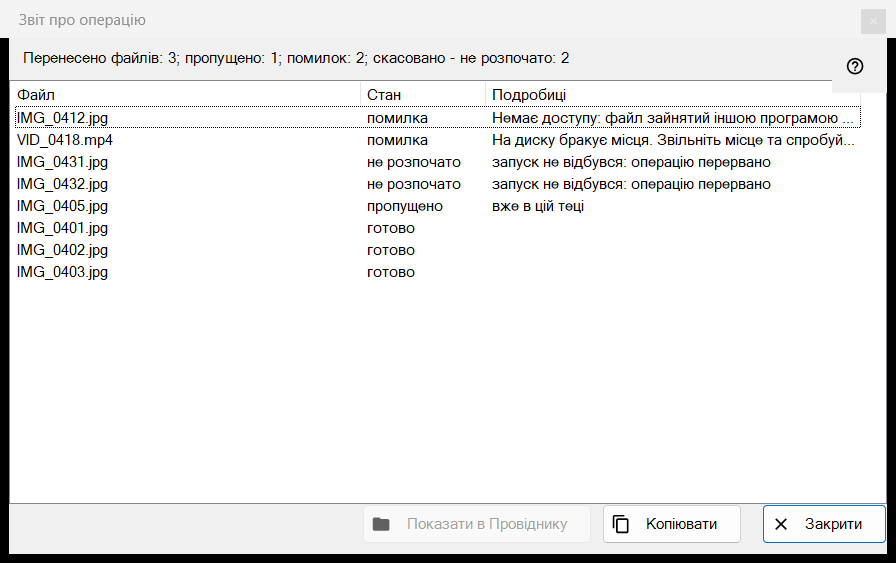
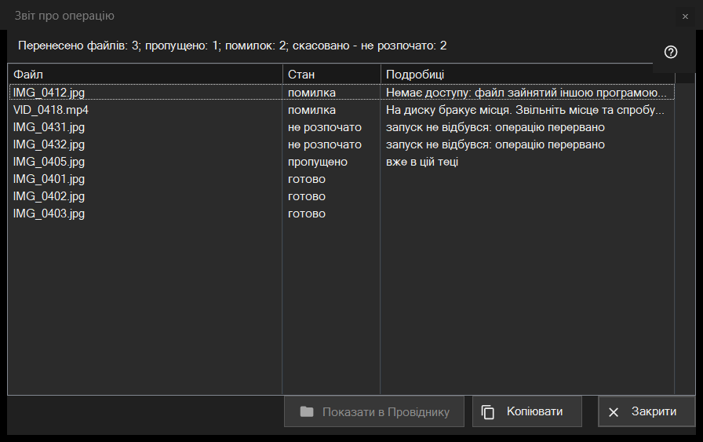

Звіт про операцію
Призначення
Перелічує, що сталося з кожним файлом останньої пакетної операції (перенесення, копіювання, видалення чи повернення), і чому щось пропущено або не вдалося. Сам він не відкривається: після операції клацніть рядок звіту внизу панелі мініатюр (F3). Якщо операція пройшла не чисто, рядок закінчується словами «натисніть, щоб побачити подробиці».


Порядок дій
- Виконайте операцію над кількома файлами в панелі мініатюр.
- Прочитайте підсумковий рядок унизу панелі.
- Клацніть його, щоб відкрити це вікно.
- Дивіться верх списку: спершу йдуть помилки.
- Виділіть рядки й натисніть «Копіювати», щоб узяти їхні шляхи, або «Показати в Провіднику», щоб знайти файл.
Елементи вікна
Підсумковий рядок
Рядок починається з результату: «Перенесено файлів: 5», «Скопійовано файлів: 5», «Видалено файлів: 5», «Повернуто файлів: 5» або «Виконано операцій: 5». Решта частин із числом з'являються, лише коли воно не нульове: «пропущено», «помилок», «операцій без скасування», «видалено назавжди, повернути не можна» і, якщо операція зупинилася раніше, «перервано, немає зв'язку з текою - не розпочато» (зупиняють три збої зв'язку поспіль) або «скасовано - не розпочато».
Список
Стовпці: «Файл», «Стан» і «Подробиці». Найважливіші рядки йдуть першими: помилки, потім нерозпочаті, потім пропущені, потім виконані; усередині групи файли йдуть у порядку операції. Підказка рядка показує повний шлях. У «Подробицях» - зрозуміла причина збою, тека призначення для виконаного файлу, «збережено як» і нове ім'я, якщо попереднє було зайняте, та «Видалено назавжди - скасування недоступне» для видалення повз Кошик.
Стани і причини пропуску
Стани: «готово», «помилка», «пропущено», «не розпочато». Пропущений файл називає причину: «вже в цій теці», «файлу вже немає на диску», «всередині архіву файли не змінюються», «те саме ім'я вже є серед вибраних файлів», «ресурс доступний лише для читання», «це той самий файл» або «ім'я вже зайняте в теці призначення». Нерозпочатий файл повідомляє «запуск не відбувся: операцію перервано».
Показати в Провіднику, Копіювати, Закрити
«Показати в Провіднику» доступна за вибраного рядка; вона відкриває вікно теки з виділеним першим із вибраних файлів або саму теку, якщо файл уже перенесено. «Копіювати» (і Ctrl+C) кладе в буфер повні шляхи вибраних рядків по одному на рядок, а якщо нічого не вибрано - усіх рядків: так зручно передати список проблемних файлів. «Закрити» завершує звіт.